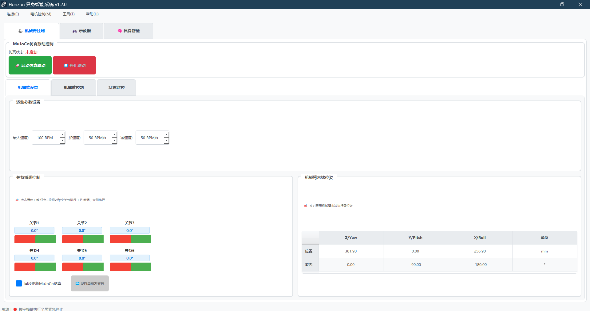

欢迎使用 Horizon_Arm¶
本指南面向最终用户。我们将提供已打包的安装程序，无需安装 Python 或命令行操作。你只需要安装软件、连接设备、按照界面提示完成配置即可开始使用。

Horizon_Arm 控制系统界面
你可以做什么¶
- 控制机械臂：单电机、多电机同步、整臂控制
- 智能助理：用自然语言让机械臂完成任务（文字或语音）
- 视觉标定：相机标定与手眼标定，提升视觉/定位精度
使用概览¶
- 安装并启动程序：桌面图标双击打开
- 连接硬件：插入 SLCAN/上电，在软件中选择串口并连接
- 选择功能：机械臂控制 / 示教器 / 具身智能 / 工具（相机标定、手眼标定等）
- 安全使用：任何界面按空格触发“全局急停”
详细步骤请阅读“用户指南”。